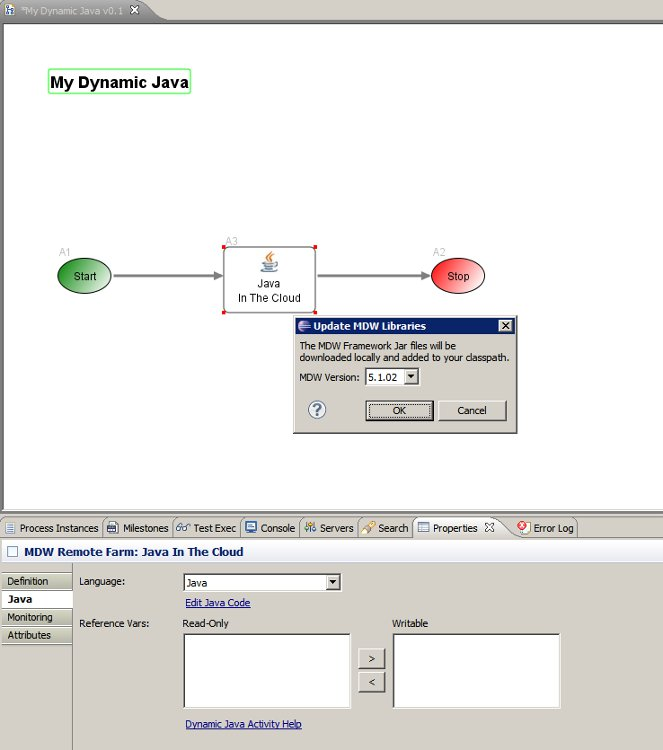

Dynamic Java
A key part of MDW's support for cloud deployments and "Platform as a Service" architecture
is the ability to execute dynamic Java transparently in both local and remote environments.
Dynamic Java workflow assets help provide this capability.
For a detailed walkthrough of MDW Cloud development,
see the MDW Cloud Cookbook.
Background
Dynamic Java takes advantage of the runtime compilation and execution framework built into JDK >= 1.6.
Compiled class definitions are lazily cached in the CompiledJavaCache as specified in the application cache configuration.
An important aspect of the Dynamic Java is that it enables you to transparently edit Java Code in a local
or remote environment without needing to redeploy or restart your server. You can also debug your code without
regard to where the workflow is hosted, setting breakpoints and viewing/changing variable values during process execution.
For MDW running in Cloud Mode,
there is no client-app Jar or War, so Dynamic Java is used to implement Custom Activities, Event Handlers and Variable Translators.
Other capabilities that can be implemented in Dynamic Java include Activity/Adapter/Process/Service Monitors, Scheduled Jobs,
Cache Services, Startup Services, and custom JSON or XML based service implementations that can be exposed through any of the supported MDW protocols
(SOAP, REST, TIBCO Bus, etc). For Manual Tasks Dynamic Java customizations include Manual Task custom Routing Strategies, AutoAssign Strategies,
Prioritization Strategies, SubTask Strategies and Task Notifiers.
Usage
To create a custom Dynamic Java Activity Implementor or Event Handler, use the appropriate Eclipse wizards and select Dynamic Java for the code generation option.
For other types of custom code, you can create a Dynamic Java asset by right-clicking on the desired workflow package location in Process Explorer
view and selecting New > Java Source. Then you can customize the generated skeleton code.
Note: If your workflow project is remote or cloud-based and it's the first time you've edited Java content in the project, you'll
be prompted to select a version of the MDW Framework Jars to download (see screenshot below). Your workflow project
will be converted to include the Java facet, and the framework libraries will be added to your project classpath.
This gives you access to all the standard Java editing capabilities built into Eclipse, with syntax highlighting
and autocomplete for the JDK classes as well as the classes provided by MDW itself.

Running and Debugging
When you're ready to test your Dynamic Java, there's no need to compile or deploy; simply saving the artifact is sufficient.
As with all types of Workflow Assets, when you open the .java file you're actually opening a local
temporary copy, and this is persisted to the database once you save the file (you'll be promted whether to increment the version and so forth).
You can execute your workflow in the usual way and you'll have the ability to debug your dynamic Java.
To do this, simply set your breakpoint(s) in Eclipse, and make sure you're connected to your server process in the debugger.
Once launched, your breakpoint should be hit and you can proceed with stepping through code as you normally would in Eclipse.